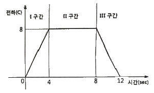
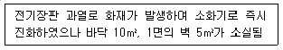
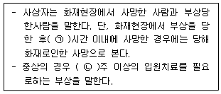
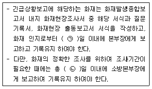
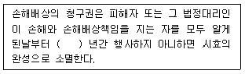
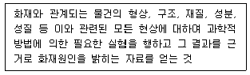
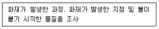
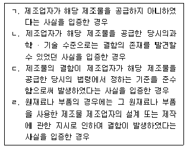

화재감식평가기사 (2021-09-12 기출문제)
1과목: 화재조사론
1. 화재조사 및 보고규정상 조사본부 설치운영에 관한 사항 중 틀린 것은?
- 조사본부장은 현장보존의 책임이 있다.
- 조사본부 설치운영시 소방본부 조사요원은 소방서 조사업무를 지원하여야 한다.
- 조사관은 소방본부 및 소방서의 화재조사 업무를 담당하고, 조사요원 지휘 감독의 책임이 있다.
- 조사본부장은 화재현장 지휘자로부터 화재조사에 관련된필요정보를 인수받아 조사의 원활한 수행을 기하도록 하여야 한다.
(정답률: 71%)

2. 화재조사자의 자세로 틀린 것은?
- 과학적이고 주관적인 조사를 해야 한다.
- 특이한 화재현상에 대하여는 관계지식을 최대한 활용하여야 한다.
- 소방기본법에 따라 부여된 권리와 의무를 초과해서는 안된다.
- 직무를 이용하여 개인의 민사관계에 관여해서는 안된다.
(정답률: 84%)
3. 복사체에서 절대온도의 차이가 두 배 높아지면 해당물질로부터 복사에 의한 열전달류은 몇 배가 되는가?
- 2
- 4
- 16
- 32
(정답률: 68%)
4. 소방기본법령상 화재조사에 관한 설명으로 틀린 것은?
- 소방서장은 화재가 발생하였을 때에는 화재조사를 하여야 한다.
- 소방공무원과 국가경찰공무원은 화재조사를 할 때에서로 협력하여야 한다.
- 화재조사를 하는 관계 공무원은 권한을 표시하는증표를 지니고 이를 관계인에게 보여 주어야 한다.
- 화재조사를 하는 관계 공무원은 화재조사를 수행하면서알게 된 비밀에 대해 인터뷰해도 된다.
(정답률: 89%)
5. 비등액체팽창증가폭발(BLEVE)에 대한 설명으로 틀린 것은?
- 인화성 액체에서만 일어날 수 있는 현상이다.
- 저장용기의 크기와 관계없이 일어날 수 있는 현상이다.
- 가압상태에서 비점이상 온도의 액체를 저장하는 용기와관련된 폭발이다.
- 저장용기 내에 존재하는 물질의 상호이상반응에 의해서도 발생이 가능한 현상이다.
(정답률: 79%)
6. 조사인원 중 전문 인력에 관한 설명으로 틀린 것은?
- 기계공학자는 전문인력으로 부적합하다.
- 특이화재의 경우 전문 인력의 도움을 받을 수 있다.
- 전문 인력을 데려오면 이해관계의 출동을 피해야 한다.
- 어떤 부분에 대한 훈련을 받았거나 받지 않았다는 사실이 특정 전문가의 자격에 영향을 끼친다는 뜻은 아니다.
(정답률: 81%)
7. 폭발 위력의 지표로 사용될 수 있는 자료와 거리가 가장 먼 것은?
- 폭심부의 깊이
- 파편의 비행거리
- 깨진 유리창의 단면
- 무너진 벽의 종류와 구조
(정답률: 71%)
8. 유류화재와 관련된 용어의 설명으로 틀린 것은?
- 인화점은 외부로부터 에너지를 받아서 착화 가능한 최저온도
- 발화점은 외부로부터 점화에너지 공급 없이 주변의 열에 의해 물질 스스로 착화되는 최저온도
- 증기밀도는 공기의 분자량을 가연성 물질의 분자량으로나눈 값
- 연소점은 화염이 꺼지지 않고 지속되는 최저온도.
(정답률: 74%)
9. MEK(메틸에틸케톤)으로 인한 화재 분류로 옳은 것은?
- A급화재
- B급화재
- C급화재
- D급화재
(정답률: 67%)
10. 화재조사관의 현장안전관리에 관한 내용으로 틀린 것은?
- 조사관은 활동 시에 화재 진압 인력과 협력해야 한다.
- 조사관은 화재현장 지휘관에게 알리지 않고 건물 내다른 곳으로 이동해서는 안 된다.
- 화재가 진압된 건물에서 조사를 수행할 때 불이 다시 날 수 있다는 것을 염두에 두어야 한다.
- 화재가 완전히 진압되기 전에 조사관은 지휘관의 허가를받지 않아도 건물에 들어가 조사를 할 수 있다.
(정답률: 88%)
11. 화재조사 및 보고규정상 화재현황조사서에 관한 사항 중틀린 것은?
- 연소확대물, 연소확대 사유를 기록한다.
- 온도, 습도와 같은 기상상황은 기록하지 않는다.
- 발화열원, 발화요인, 최초착화물 등 화재원인을 기록한다.
- 동원인력 사항을 기록할 때 잔불감시 인력에 대한 사항을 기록한다.
(정답률: 86%)
12. 화재증거물수집관리규칙상 증거물의 포장ㆍ보관ㆍ이동에 관한 설명으로 옳은 것은?
- 증거물의 포장은 보호상자를 사용하여 일괄 포장함을원칙으로 한다.
- 화재 증거물은 관계인의 승낙에 관계없이 폐기할 수 있다.
- 증거물은 화재증거 수집 목적 달성 후 관계인에게 반환하지 않고 3년간 보관하여야 한다.
- 증거물의 반환 또는 폐기까지 화재조사자 또는 이와 동일한 자격 및 권한을 가진 자의 책임 하에 행해져야한다.
(정답률: 74%)
13. 증거물 수집 용기와 시료의 적응성을 연결한 것으로틀린 것은?
- 비닐 백 : 액체
- 종이상자 : 고체
- 금속캔 : 고체, 액체
- 유리병 : 고체, 액체
(정답률: 81%)
14. 화재상황보고에 대한 설명으로 틀린 것은?
- 최종보고는 화재종료직후 최초보고 및 중간보고를취합하여 보고한다.
- 중간보고 시 화재 원인이 규명되지 않았을 때는 보고하지 않는다.
- 중간보고는 화재상황 진전에 따라 연소확대여부,인명구조 활동상황 등을 수시로 보고한다.
- 화재상황 최초보고는 선착대가 화재현장 도착즉시 현장지휘관의 책임 하에 화재규모, 인명피해발생여부 등을 보고한다.
(정답률: 75%)
15. 대표적으로 숯, 코크스 등이 연소되는 현상으로 산소와 접하게 되는 물질의 연소로 화염이 없이 표면에서 나타나는 연소의 형태는?
- 분해연소
- 표면연소
- 확산연소
- 혼합연소
(정답률: 85%)
16. 백드래프트(Back Draft) 현상에 관한 설명으로 옳은 것은?(오류 신고가 접수된 문제입니다. 반드시 정답과 해설을 확인하시기 바랍니다.)
- 주로 감쇠기 단계에 발생한다.
- 연소속도가 빠르기 때문에 압력파를 생성하지만충격파는 생성하지 않는다.
- 현상 발생 전 구획실 내 대기는 산소가 충분한 상태이다.
- 발생 전 구획실 내 가연성 증기의 온도는 인화점 이상이다.
(정답률: 54%)
17. 가연성기체 중 위험성의 척도인 위험도가 가장 큰 것은?
- 메탄
- 에탄
- 프로판
- 아세틸렌
(정답률: 80%)
18. 폭발현상에 관한 설명으로 틀린 것은?
- 기체나 액체의 팽창, 상변화 등의 물리적 현상이 압력발생의 원인이 되어 발생하는 폭발을 물리적폭발이라 한다.
- 물질의 분해, 연소 등으로 압력이 상승하는 것이 원인이 되어 발생하는 폭발을 화학적 폭발이라 한다.
- 알루미늄 분진이 공기 중에 부유된 상태에서 일어나는폭발은 화학적 폭발에 해당한다.
- 폭연은 화연전파속도가 미반응 매질 속에서 음속보다큰 속도로 이동하는 폭발현상이다.
(정답률: 70%)
19. 탄화심도 측정방법으로 옳은 것은?
- 뾰족한 기구보다 끝이 뭉툭한 것이 좋다.
- 탄화심도 측정 시 갈라진 틈 안을 측정한다.
- 비교 측정 시 다른 측정 기구를 사용하는 것이 좋다.
- 각각의 측정 도구를 집어넣을 때 압력을 조금씩다르게 하는 것이 중요하다.
(정답률: 72%)
20. 유리의 파단면 분석에 관한 설명으로 옳은 것은?
- 강화유릥 자발파괴(Spontaneous Breakage)형태는쌍을 이루는 8각형의 파편이 발견된다.
- 충격에 의한 파괴유리의 충격방향을 확인하기 위해서는동심원파단면의 월러라인(Wallner Line)을 확인하는 것이 효과적이다.
- 재료가 여러 번의 외력에 의하여 순차적으로 분리되었을때는 동반하여 발생하는 분리선을 관찰하며 외력의 작용순서를 알 수 있다.
- 폭발로 인한 압력에 의해 많은 파편들이 폭발의 중심부로부터 멀리 비산되는데, 화재이후 폭발이 발생하였다면, 멀리 비산된 파편에 그을음이 부착될 수 없다.
(정답률: 56%)
2과목: 화재감식론
21. 선박방화구조기준상 용어의 설명으로 틀린 것은?
- 주수직구역격벽이란 선체, 선루 및 갑판실을 주수직구역으로 구분하는 격벽을 말한다.
- 주수평구역이란 선체, 선루 및 갑판실이 A급구획의갑판으로 구분된 구역으로서 해당 구역의 높이가 10미터를 초과하지 아니하는 구역을 말한다.
- 방화댐퍼란 통풍용 덕트에 설치된 장치로서, 평상시에는덕트 내에 공기가 흐를 수 있도록 열려 있다가 화재 시에는 연기 및 고온의 가스 전파를 차단하기 위하여 덕트 내의 공기의 흐름을 막을 수 있도록 폐쇄하는 장치이다.
- 기관구역이란 특정기관구역과 추진기관, 보일러, 내연기관, 주요전기설비, 냉동기, 감요(減搖)장치, 송풍기및 공기조화기기가 있는 장소, 급유장소 그 밖에 이와 유사한 장소와 이들 장소에 이르는 트렁크를 말한다.
(정답률: 60%)
22. 유류를 이용한 자살 방화 현장의 특징 중 틀린 것은?
- 유류와 사용한 용기가 존재한다.
- 연소면적이 좁고 탄화심도가 깊다.
- 우발적이기보다는 계획적으로 실행한다.
- 급격한 연소 확대로 연소의 방향성 식별이 어렵다
(정답률: 65%)
23. 담뱃불 화재 현장의 주요 감식사항이 아닌 것은?
- 발화에 충분한 축열조건
- 발화지점을 넓게 탄화된 흔적
- 흡연행위가 있었다는 것을 증명
- 담뱃불에 의해 착화될 수 있는 가연물
(정답률: 60%)
24. 다음 발화원인 중 미소화원이 아닌 것은?
- 담뱃불
- 용접불티
- 절삭 불티
- 가스레인지 불꽃
(정답률: 74%)
25. 자동차 점화장치의 전류 흐름 순서로 옳은 것은?
- 점화스위치 → 점화코일 → 배터리 →시 동모터 → 배전기 → 고압케이블 → 스파크 플러그
- 점화스위치 → 배터리 → 시동모터 → 점화코일 → 배전기 → 고압케이블 → 스파크 플러그
- 점화스위치 → 시동모터 → 점화코일 → 배터리 → 배전기 → 고압케이블 → 스파크 플러그
- 점화스위치 → 고압케이블 → 배전기 → 시동모터 → 점화코일 → 배터리 → 스파크 플러그
(정답률: 74%)
26. 일반적으로 산소, 수소, 질소, 아르곤 등의 압축가스 용기의 안전장치에 적합한 밸브는?
- 파열판식 안전밸브
- 스프링식 안전밸브
- 가용전(가용합금식) 안전밸브
- 스프링식과 팡려판식의 2중 안전밸브
(정답률: 62%)
27. 사람이 버린 담배꽁초에 의해 화재가 발생하였을 때추정되는 선행 발화원인은?
- 휴지
- 담배꽁초
- 쓰레기통
- 사람의 부주의 행위
(정답률: 74%)
28. 절연 저항계의 설명으로 옳은 것은?(문제 오류로 가답안 발표시 3번으로 발표되었지만 확정답안 발표시 전항 정답 처리 되었습니다. 여기서는 가답안인 3번을 누르면 정답 처리 됩니다.)
- 발전기식 절연 저항계는 전지식에 비해 소형 경량이고조작도 간단하며 기계적 접점이 없으므로 고장이 적은특징이 있다.
- 절연 저항계에서 절연 측정은 전기기기나 전로의 사용을 멈추고 단전 상태에서 하며, 활선 상태에서는 전로의절연 저항을 측정할 수 없다.
- 절연 저항계의 측정 전압은 10V, 25V, 50V, 100V, 500V, 1,000V 등 다양한 범위를 가지며, 고저항의 측정 범위는500㏀ ~ 2×1016Ω까지 직독할 수 있다.
- 절연 저항계는 전기기기나 배선공사의 안정성을 확보하기위해서 이들의 교류절연저항을 측정하는 계측기로서, 보통 메거라고 한다.
(정답률: 71%)
29. 일반화재와 구별되어야 하는 차량화재의 특수성에 대한설명 중 틀린 것은?
- 차량은 동력기계 계통, 전기전자 계통, 연료공급 계통,배기계통 등 기구의 복잡성이 있다.
- 연료, 시트 등 화재 하중이 낮고, 외기에 개방된 상태인환기 지배형 화재의 특성을 보인다.
- 다양한 부착물 및 이의 변ㆍ개조가 용이하므로, 이러한구조적 특서성에 의한 화재위험성에 노출되어 있다고볼 수 있다.
- 차량은 개방된 공간에 존치되는 특수성에 의해사회적 불만이나 주차불만을 가진 자가 불특정한방법으로 방화할 개연성이 높다고 볼 수 있다.
(정답률: 75%)
30. 그림과 같이 시간에 따른 전하의 이동에 있어서구간별 전류는 얼마인가?

- Ⅰ구간 : 8A, Ⅱ구간 : 0A, Ⅲ구간 : -1A
- Ⅰ구간 : 8A, Ⅱ구간 : 8A, Ⅲ구간 : -2A
- Ⅰ구간 : 2A, Ⅱ구간 : 0A, Ⅲ구간 : -2A
- Ⅰ구간 : 2A, Ⅱ구간 : 8A, Ⅲ구간 : -1A
(정답률: 69%)
31. 고압가스 안전관리법령상 가스 종류에 따른 용기외면 도색이 바르게 연결된 것은?
- 수소 - 백색
- 아세틸렌 - 갈색
- 액화석유가스 - 회색
- 액화암모니아 - 주황색
(정답률: 60%)
32. 열전도성, 밀도 및 비열의 곱으로 정의되며 물질에 가해지는 에너지에 대한 물질의 반응을 설명하는데 사용되는 용어는?
- 발화성
- 열관성
- 유동성
- 전열성
(정답률: 57%)
33. 화학결합에 대한 설명으로 틀린 것은?
- 전자쌍이 균등하게 공유되어 있지 않은 공유결합을비극성공유결합이라고 한다.
- 이온 결합은 두 이온 사이의 거리가 짧고, 두 이온의전하량이 클수록 결합력이 강하다.
- 수소 분자처럼 두 원자가 한 쌍 또는 그 이상의 전자쌍을 공유함으로서 형성되는 결합을 공유결합이라고 한다.
- 이온화합물의 물리적 형태는 반대로 하전된 이온이 규칙적으로 배열된 결정성으로서 화합물의 양이온과음이온의 전하량의 합은 0이다.
(정답률: 56%)
34. 탄화된 목재에서 공통적으로 나타나는 탄화흔과 균열흔의특성으로 틀린 것은?
- 무염연소는 목재의 표면에 따라 광범위하게 전파된다.
- 불에 오래도록 강하게 탈수록 탄화의 깊이는 깊다.
- 탄화모양을 형성하고 있는 패인 골이 깊을수록 소손이강하다.
- 탄화모양을 형성하고 있는 패인 골의 폭이 넗을수록소손이 강하다.
(정답률: 68%)
35. 항공기 보조동력장치(APU)의 소화용기(container) 내용물이과도한 열로 인하여 외부로 배출 시 나타나는 지시는?
- 배출밸브(discharge valve)가 열린다.
- 조종실에 경고등이 들어온다.
- 온도방출지시기(thermal dischare indicator)의 Yellow Disk가 없다.
- 온도방출지시기(thermal dischare indicator)의 Red Disk가 없다.
(정답률: 62%)
36. 임야화재에서 화염진행 방향에 따른 분류가 아닌 것은?
- 수직화재
- 전진화재
- 후진화재
- 횡진화재
(정답률: 63%)
37. 위험물안전관리법령상 제1류 산화성 고체에 명시되지 않은 것은?
- 질산염류
- 염소산염류
- 과염소산염류
- 질산에스테르류
(정답률: 72%)
38. pH12인 수산화나트륨 수용액 50㎖를 중화시키기 위하여농도를 알 수 없는 염산 10㎖를 사용하였다면 이 염산의 농도는?
- 0.01 N
- 0.02 N
- 0.⑤ N
- 0.1 N
(정답률: 40%)
39. 임야화재에 영향을 주는 3대 중요 요소가 아닌 것은?
- 기후
- 지형
- 가연물
- 점화원
(정답률: 67%)
40. 방화의 행위방법 중 직접착화에 의해 발생한 화재의 특이점으로 옳은 것은?
- 인화물질을 이용한 경우 그 용기를 화재장소에서 먼 곳에 감춘다.
- 착화행위 직후 화염이 확대되고 대부분 한 곳에 집중적으로 착화시킨다.
- 비교적 착화가 용이한 부분에 착화시키므로 훈소 또는 회화 현상이 많이 식별된다.
- 방화범의 의류에 촉진제가 부착되는 경우가 있다.
(정답률: 65%)
3과목: 증거물관리 및 법과학
41. 화재증거물수집관리규칙상 증거물 시료용기 중 양철 캔(CAN)에 관한 설명으로 틀린 것은?
- 양철 캔과 그 마개는 청결하고 건조해야 한다.
- 사용하기 전에 캔의 상태를 조사해야 하며 누설이나녹이 발견될 때에는 사용할 수 없다.
- 양철 캔은 기름에 견딜 수 있는 디스크를 가진 스크루 마개 또는 누르는 금속마개로 밀폐될 수 있으며, 이러한 마개는 재사용이 가능하다.
- 양철 캔은 적합한 양철판으로 만들어야 하며, 프레스를 한 이음매 또는 외부 표면에 용매로 송진 용제를 사용하여 납땜을 한 이음매가 있어야 한다.
(정답률: 75%)
42. 가솔린(Gasoline)을 GC-MS로 분석할 경우 검출되는 성분이 아닌 것은?
- 톨루엔
- 크실렌
- 알킨벤젠
- 멜라민
(정답률: 47%)
43. 화재현장 및 물리적 증거물의 보존에 대한 책임이있는 자가 아닌 것은?
- 소방관
- 화재조사관
- 경찰관
- 제조사 직원
(정답률: 77%)
44. 화재조사관이 관계자 진술을 확보하고자 할 때 유의사항으로 틀린 것은?
- 인터뷰하는 동안 입수한 정보의 질을 평가해야 한다.
- 인터뷰의 목적은 유용하고 정확한 정보를 수집하기위함이다.
- 인터뷰는 화재가 완전히 진압된 뒤 천천히 진행한다.
- 증인은 사고에 대한 직접적인 목격자가 아니라도화재에 대한 정보를 제공할 수 있다.
(정답률: 75%)
45. 피부화상을 조직손상 깊이에 따라 분류할 때, 2도 화상에 대한 설명으로 옳은 것은?
- 국부적인 화상으로 표피와 함께 진피까지 손상된 화상을말하며 열에 의한 손상이 많다.
- 모세혈관의 충혈로 인하여 종창과 더불어 홍반만 보이기때문에 홍반성 화상이라고 한다.
- 부스럼 딱지 또는 생체 내의 피부조직이나 세포가 죽는응고성 괴사에 빠지므로 괴사성 화상이라고도 한다.
- 화열에 의한 국부적인 피부충혈과 부어오르는 발적현상은 살아있는 사람에게 나타나고 사체에는 화열을 작용시켜도 이와 같은 현상은 나타나지 않는다.
(정답률: 60%)
46. 화재사의 생활반응으로 틀린 것은?
- 화상
- 안구의 점상 출혈
- 선홍색 시반 출현
- 그을음의 흡입 흔적
(정답률: 56%)
47. 콘크리트 바닥과 같은 다공성 물질에 흡수된 액체 촉진제증거물을 수집할 때 흡수성 물질을 콘크리트 표면에 바르고유지시키는 시간으로 옳은 것은?
- 1 ~ 2시간
- 3 ~ 5분
- 5 ~ 10분
- 20 ~ 30분
(정답률: 60%)
48. 화재현장 사진 촬영에 대한 설명으로 틀린 것은?
- 가능하다면 진행되고 있는 화재를 촬영한다.
- 건물은 가능한 여러 각도와 외부 각도에서 많은 사진을 찍어야 한다.
- 현재 현장의 위치를 확실히 하기 위해 외부 사진을촬영해 두어야 한다.
- 군중 속의 사람을 촬영하는 것은 인권침해의 우려가 있어 촬영해서는 안된다.
(정답률: 69%)
49. 가솔린과 같은 휘발성 액체을 장기간 보관하는 경우가장 적절한 보관 용기는?
- 유리병
- 금속 캔
- 특수 증거물 봉지
- 일반 비닐 증거물 봉지
(정답률: 68%)
50. 콘크리트와 같은 표면에 뿌려진 인화성액체 잔류물수거 시 사용하는 물질과 거리가 가장 먼 것은?
- 석회
- 규조토
- 밀가루
- 베이킹파우더
(정답률: 56%)
51. 냉온수기의 자동온도 조절장치에서 절연체의 오염에 의한 트래킹 화재가 발생한 경우 수거해야 할 증거물로 옳은 것은?
- 응축기(Condenser)
- 압축기(Compressor)
- 서모스탯(Thermostat)
- 과부하 계전기(Overload relay)
(정답률: 76%)
52. 가연성 액체가 살포된 수평재에서 발견되는 패턴이 아닌 것은?
- V 패턴
- 포어 패턴
- 스플래시 패턴
- 도넛 패턴
(정답률: 61%)
53. 화재증거물수집관리규칙상 명시된 현장사진 및 비디오촬영에 관한 내용으로 옳은 것은?
- 최초 도착하였을 때 원상태를 그대로 촬영한다.
- 화재조사 진행순서와 상관없이 신속히 촬영한다.
- 증거물을 촬영할 때는 구분이 용이하도록 반드시 번호표 등을 넣어 촬영한다.
- 연소확대 경로 기록 시 번호표와 화살표는 생략한다.
(정답률: 55%)
54. 디지털카메라의 고유 기능으로 받아들인 빛을 증폭하여감도를 높이거나 낮춰주는 기능은?
- 줌 기능
- EV 쉬프트
- ISO 조절기능
- 화이트 밸런스
(정답률: 71%)
55. 화재증거물수집관리규칙상 촬영한 사진으로 증거물과 서류를 작성할 때 현장 및 감정사진 작성방법에 관한 설명으로 틀린 것은?
- 화재발생 일시를 기재한다.
- 사진 촬영한 방위를 표기한다.
- 화재현장 증거물 및 감정사진을 첨부하고 하단에 제목과 설명을 기재한다.
- 형사사건 및 재판상 증거자료로 활용될 수 있으므로주의를 기울여 촬영한다.
(정답률: 45%)
56. 0.3%의 농도에서 즉시 사망할 수 있으며 질소성분을 가지고 있는 합성수지, 동물의 털, 인조견 등의 섬유가불완전 연소 시 발생하는 맹독성 가스로 옳은 것은?
- 암모니아
- 포스겐
- 염화수소
- 시안화수소
(정답률: 60%)
57. 화재증거물수집관리규칙상 수집한 증거물을 이송할 때포장하고 기록ㆍ부착 하여야 하는 상세정보가 아닌 것은?
- 수집장소 및 수집자
- 소유자 및 관리자 성명
- 증거물 내용 및 봉인자
- 수집일시 및 증거물 번호
(정답률: 66%)
58. 화재현장에서 수집된 증거의 해석으로 틀린 것은?
- 화재현장에서 발견된 소사체에서 생활반응이 있을경우 피해자는 화재 이전 사망한 상태였다는 것을알 수 있다.
- 깨져 바닥에 쏟아진 유리창의 내측에 그을음이 부착되어 있지 않다면 화재이전 창문이 먼저 깨졌다는 것을 의미한다.
- 화재현장 내부의 전기배선 끝단이 합리적인 이유 없이절단된 경우 현장조사를 방해하기 위한 행위로 추정해볼 수 있다.
- 타이어 흔적 위로 족적이 찍혀 있다면 이러한 증거는 차량이 지나간 후 에 누군가 걸어갔다는 것을 증명해주는 역할을 한다.
(정답률: 59%)
59. 화재현장에 있는 벽면이나 철판 등에 발생하는 백화현상에 대한 설명으로 옳은 것은?
- 한번 부착된 그을음은 없어지지 않는다.
- 그을음이 부착되었다가 열에 의해 연소한 흔적이다.
- 열에 의해 가열되었다가 급속히 냉각된 흔적이다.
- 훈소로 발생한 가연성 증기가 응축하면서 부착된흔적이다.
(정답률: 68%)
60. 화재증거물 보관에 대한 설명으로 옳은 것은?
- 증거물은 밝은 곳에 보관한다.
- 휘발성 물질은 냉장 보관한다.
- 냉동 보관된 물질은 물리적 테스트에 도움을 준다.
- 수분이 포함된 금속물질은 견고하게 밀폐시켜산화를 방지한다.
(정답률: 54%)
4과목: 화재조사보고 및 피해평가
61. 화재조사 및 보고규정상 화재 피해액ㄴ 산정 대상이 전부손해인 경우 시중매매가격을 화재로 인한 피해액으로 산정하지 않는 것은?
- 차량
- 동물
- 식물
- 골동품
(정답률: 63%)
62. 화재조사 및 보고규정상 질문기록서의 작성을 생략할 수있는 화재는?
- 전봇대 화재
- 건축ㆍ구조물 화재
- 선박 · 항공기 화재
- 자동차ㆍ철도차량 화재
(정답률: 73%)
63. 화재현장출동보고서의 작성자에 대한 설명으로 틀린 것은?
- 보고서의 작성자는 화재현장에 출동한 소방공무원으로한정한다.
- 원칙적으로 일반대원보다 선착대의 대장을 작성자로한다.
- 구조대원 또는 구급대원은 작성자가 될 수 없다.
- 화재현장에 출동한 소방대원이 실제로 관찰ㆍ확인한연소상황이나 정보를 직접 기재한다.
(정답률: 73%)
64. 화재조사 및 보고규정상 조사활동 중 소방본부장 또는 소방서장이 소방청장에게 긴급상황을 보고하여야할 화재가 아닌 것은?
- 정부미 도정공장의 화재
- 발전소 및 변전소의 화재
- 이재민 100명 이상 발생한 화재
- 재산피해가 30억원으로 추정되는 화재
(정답률: 73%)
65. 화재피해액 산정 시 유의사항으로 틀린 것은?
- 모델하우스에 대한 최종잔가율은 20%이다.
- 문화재로 지정되었거나 보존가치가 높은 건물의경우 전문가의 감정에 의한 가격을 현재가로 한다.
- 집기비품, 가재도구를 일괄하여 피해액을 산정할 경우재구입비의 60%를 피해액으로 한다.
- 중고구입기계장치 및 집기비품의 제작년도를 알 수 없는 경우 신품가액의 30 ~ 50%를 재구입비로 하여피해액을 산정한다.
(정답률: 56%)
66. 화재현장조사보고서 작성에 필요한 도면 작성방법으로틀린 것은?
- 도면작성에 있어서 방의 배치와 출입구, 개구부의상황을 위주로 한다.
- 거리측정은 기둥의 하단에서 다른 기둥의 상단까지로기준점을 통일한다.
- 도면(평면도, 입체도)은 측정치를 기준으로 하여 축척에맞춰서 작성한다.
- 방 배치가 복잡한 건물은 기준으로 한 점을 정하고그 점을 기준으로 사방으로 넓히면서 측정하면비교적 이해하기 쉽다.
(정답률: 65%)
67. 주택화재로 사용 중이던 냉장고가 수침손을 입었으나성능에 별다른 지장이 없는 경우 적용하는 손해율(%)은?
- 5
- 10
- 15
- 20
(정답률: 65%)
68. 화재조사 및 보고규정상 관할구역 내에서 발생한 화재에대하여 작성하여야 하는 서류가 아닌 것은?
- 질문기록서
- 범죄사실보고서
- 화재발생종합보고서
- 화재현장출동보고서
(정답률: 71%)
69. [보기]의 화재로 발생한 소실면적은?

- 3
- 5
- 10
- 15
(정답률: 62%)
70. 화재조사 및 보고규정상 화재 당시에 피해물의 재구입비에대한 현재가의 비율을 뜻하는 용어는?
- 잔가율
- 손해율
- 감가상각
- 경년감가율
(정답률: 74%)
71. 화재조사 및 보고규정상 위험물 가스ㆍ제조소등 화재의 화재유형별 조사서 내용 중 위험물제조소 등에 포함되지않는 것은?
- 옥외저장소
- 주유취급소
- 이동탱크저장소
- 액화석유가스제조시설
(정답률: 60%)
72. 화재피해액 산정기준에서의 화재피해액 산정대상으로 옳은 것은?

- ㉠ 48, ㉡ 3
- ㉠ 48, ㉡ 4
- ㉠ 72, ㉡ 3
- ㉠ 72, ㉡ 4
(정답률: 69%)
73. 예술품 및 귀중품의 화재피해액 산정기준으로 틀린 것은?
- 감가공제를 하지 아니한다.
- 복수의 전문가 감정을 받거나 감정서 등의 금액을피해액으로 인정한다.
- 공인감정기관에서 인정하는 금액을 화재로 인한 피해액으로 산정한다.
- 예술품 및 귀중품에 대한 그 가치를 손상하지 아니하고원상태의 복원이 가능한 경우에는 피해액을 인정하지아니한다.
(정답률: 65%)
74. 화재조사 및 보고규정상 방화ㆍ방화의심조사서 작성 시기재항목이 아닌 것은?(단, 참고사항은 제외한다.)
- 방화동기
- 방화도구
- 처벌법규
- 도착 시 초기상황
(정답률: 68%)
75. 화재조사 및 보고규정상 화재조사 결과 보고에 관한사항으로 ( )에 알맞은 내용은?

- ㉠ 15, ㉡ 30
- ㉠ 15, ㉡ 50
- ㉠ 30, ㉡ 50
- ㉠ 30, ㉡ 30
(정답률: 65%)
76. 내용연수가 40년인 일반 공장에서 준공 후 15년이 지나서 화재가 발생하였을 때 잔가율(%)은?
- 20
- 30
- 50
- 70
(정답률: 49%)
77. 철거건물에 대한 화재피해액을 산정하는 계산식은?
- 재건축비×[0.1+(0.8×잔여내용연수/내용연수)]
- 재건축비×[0.1+(0.9×잔여내용연수/내용연수)]
- 재건축비×[0.2+(0.8×잔여내용연수/내용연수)]
- 재건축비×[0.2+(0.9×잔여내용연수/내용연수)]×손해율
(정답률: 55%)
78. 화재현장조사서 작성에 대한 설명으로 틀린 것은?
- 입회인의 설명내용과 조사원의 관찰ㆍ확인 사실은 구분하지 않고 작성한다.
- 현장조사서에는 주관적 판단이나 조사자가 의도하는결론으로 유도하지 않는다.
- 작성자는 현장조사를 직접 행한 자로 한정하고 다른 사람이 대신하여 작성하는 것은 인정되는 않는다.
- 현장조사서의 기재는 조사자의 의사나 판단이 개입되지않도록 현장상황이나 소손물건 등을 객관적으로 가능한있는 그대로 표현하는 것이 좋다.
(정답률: 53%)
79. 화재조사 및 보고규정상 화재피해액 산정기준으로 틀린 것은?
- 재고자산의 산정기준은 「회계장부상 현재가액 × 손해율」의 공식에 의한다.
- 영업시설의 산정기준은 「화재피해액 × 10%」의 공식에 의한다.
- 기계장치 및 선박ㆍ항공기 산정기준은 「감정평가서또는 회계장부상 현재가액 × 손해율」의 공식에 의한다.
- 부대설비의 산정기준은 「건물신축단가 × 소실면적 × 설비종류별 재설비 비율×[1-(0.8×경과년수/내용연수)] × 손해율」의 공식에 의한다.
(정답률: 50%)
80. 화재조사 및 보고규정상 명시된 화재현황조사서의 기상상황에 해당하지 않는 것은?
- 온도
- 기상특보
- 기압
- 풍향 및 풍속
(정답률: 60%)
5과목: 화재조사관계법규
81. 화재로 인한 재해보상과 보험가입에 관한 법령상 한국화재보험협회의 업무에 명시되지 않은 것은?(단, 그 밖에 금융위원회의 인가를 받은 업무는 제외한다.)
- 화재예방 및 소화시설에 대한 안전점검
- 소방기술정보를 보급하여 화재예방 도모
- 화재예방과 소화시설에 관한 자료의 조사ㆍ연구 및 계몽
- 화재보험에 있어서의 소화설비(消火設備)에 따른 보험요율의 할인등급에 대한 사정(査定)
(정답률: 42%)
82. 화재로 인한 재해보상과 보험가입에 관한 법령상 특약부화재보험에 가입하지 아니한 특수건물의 소유자에게 주어지는 벌칙은?
- 500만원 이하의 벌금
- 1000만원 이하의 벌금
- 1500만원 이하의 벌금
- 1년 이하의 징역 또는 1천만원 이하의 벌금
(정답률: 61%)
83. 화재로 인한 재해보상과 보험가입에 관한 법령상특수건물의 기준으로 옳은 것은?
- 음악산업진흥에 관한 법률에 따른 노래연습장업으로사용하는 부분의 바닥면적의 합계가 1천m2 이상인 건물
- 관광진흥법에 따른 관광숙박업으로 사용하는 건물로서연면적의 합계가 3천m2 이상인 건물
- 학원의 설립ㆍ운영 및 과외교습에 관한 법률에 따른학원으로 사용하는 부분의 바닥면적의 합계가 1천m2이상인 건물
- 의료법에 따른 병원급 의료기관으로 사용하는 건물로서 연면적의 합계가 2천m2 이상인 건물
(정답률: 72%)
84. 화재증거물수집관리규칙상 증거물에 대한 조치로 틀린 것은?
- 증거물 수집 목적이 인화성 액체 성분분석인 경우에는인화성 액체 성분의 증발을 막기 위한 조치를 행하여야한다.
- 증거물의 보관은 전용실 또는 전용함 등 변형이나파손될 우려가 없는 장소에 보관한다.
- 증거물은 화재증거 수집의 목적달성 후 관계인의 승낙이있을 때에는 폐기할 수 있다.
- 발화원인의 판정에 관계가 있는 개체에 대해서는 증거물과 이격되어 있거나 연소되지 않은 상황이라면기록을 남기지 않을 수 있다.
(정답률: 67%)
85. 국가배상법령상의 내용으로 틀린 것은?
- 외국인이 피해자인 경우에는 해당 국가와 상호 보증이있을 때에만 적용한다.
- 생명ㆍ신체의 침해로 인한 국가배상을 받을 권리는 양도할 수 있다.
- 손해배상의 소송은 배상심의회에 배상신청을 하지아니하고도 제기할 수 있다.
- 국가나 지방자치단체는 공무원이 직무를 집행하면서고의 또는 과실로 법령을 위반하여 타인에게 손해를 입힌 경우에 그 손해를 배상하는 것이 원칙이다.
(정답률: 68%)
86. 화재증거물수집관리규칙상 증거물 보관ㆍ이동 시 책임자가 전 과정에 대하여 입증할 수 있도록 작성하여야 하는 사항으로 명시되지 않은 것은?
- 증거물 운반일자, 운반자
- 증거물 발신일자, 발신자
- 증거물 수신일자, 수신자
- 증거물 최초상태, 개봉일자, 개봉자
(정답률: 59%)
87. 화재조사 및 보고규정상 최종잔가율의 정의로 옳은 것은?
- 피해물의 내용연수에 대한 사용연수의 비율
- 화재 당시에 피해물의 재구입비에 대한 현재가의 비율
- 피해물의 종류, 손상 상태 및 정도에 따라 피해액을적정화시키는 일정한 비율
- 피해물의 경제적 내용연수가 다한 경우 잔존하는 가치의 재구입비에 대한 비율
(정답률: 65%)
88. 경범죄 처벌법령상 범칙행위를 한 사람으로서 범칙자에 해당하는 사람은?
- 나이가 18세 이상인 사람
- 피해자가 있는 행위를 한 사람
- 범칙행위를 상습적으로 하는 사람
- 죄를 지은 동기나 수단 및 결과를 헤아려 볼 때구류처분을 하는 것이 적절하다고 인정되는 사람
(정답률: 64%)
89. 경범죄 처벌법령상 즉결심판 대상자에게 발부하는 즉결심판출석통지서에 기재하는 사항이 아닌 것은?
- 위반 내용 및 적용 법조문
- 즉결심판 대상자의 인적사항
- 즉결심판을 위한 출석의 일시 및 장소
- 지방법원, 지원 또는 시ㆍ군법원의 판사이름
(정답률: 76%)
90. 제조물 책임법의 제정목적이 아닌 것은?
- 제조업자의 이익증진
- 피해자의 보호를 도모
- 국민생활의 안전 향상
- 국민경제의 건전한 발전
(정답률: 73%)
91. 실화책임에 관한 법률상 손해배상액 경감청구가 있을경우 고려사항으로 명시되지 않은 것은? (단, 그 밖에 손해배상액을 결정할 때 고려할 사항은 제외한다.)
- 화재의 원인과 규모
- 소화수에 의한 수손 피해의 정도
- 배상의무자 및 피해자의 경제상태
- 피해 확대를 방지하기 위한 실화자의 노력
(정답률: 53%)
92. 제조물 책임법상 명시된 소멸시효에 관한 내용으로( )에 알맞은 내용은?

- 1
- 2
- 3
- 5
(정답률: 73%)
93. 화재조사 및 보고규정상 다음의 설명에 해당하는 용어는?

- 조사
- 감식
- 감정
- 수사
(정답률: 67%)
94. 민법상 불법행위로 인한 배상의 책임 기준으로 틀린 것은?
- 공동불법행위의 책임과 관련하여 교사자나 방조자는 공동행위자로 본다.
- 과실로 인한 심신상실을 초래한 경우 타인에게 손해를가한 자는 배상의 책임이 없다.
- 미성년자가 타인에게 손해를 가한 경우에 그 행위의 책임을 변식할 지능이 없는 때에는 배상의 책임이 없다.
- 타인의 생명을 해한 자는 피해자의 직계존속, 직계비속및 배우자에 대하여는 재산상의 손해없는 경우에도손해배상의 책임이 있다.
(정답률: 61%)
95. 형법상 현주건조물 등에의 방화로 사람을 사망에 이르게 한 경우의 벌칙은?
- 2년 이상의 징역
- 3년 이상의 징역
- 무기 또는 5년 이상의 징역
- 사형, 무기 또는 7년 이상의 징역
(정답률: 58%)
96. 소방기본법령상 다음의 조사범위에 해당하는 화재원인조사의 종류는?

- 발화원인조사
- 연소확대조사
- 연소상황조사
- 화재성장상황조사
(정답률: 78%)
97. 소방기본법령상 화재의 조사에 관한 사항으로 틀린 것은?
- 소방공무원과 경찰공무원은 화재조사를 할 때에서로 협력하여야 한다.
- 화재조사 결과 실화 혐의가 있다고 인정하면 소방청장에게보고하여 경찰부서에 통보할지 여부를 결정한다.
- 수사기관에서 실화의 혐의로 압수한 증거물이 화재조사를 위하여 필요한 경우, 수사에 지장을 주지 않는 범위에서 압수된 증거물에 대한 조사를 할 수 있다.
- 수사기관에 방화혐의로 체포된 피의자가 화재조사를 위하여 필요한 경우, 수사에 지장을 주지 않는 범위에서피의자를 조사할 수 있다.
(정답률: 72%)
98. 소방기본법령상 명시된 화재조사를 하는 관계공무원이 관계인의 정당한 업무를 방해하거나 화재조사를 수행하면서알게된 비밀을 다른 사람에게 누설한 자의 경우의 벌칙기준은?
- 300만원 이하의 벌금
- 500만원 이하의 벌금
- 700만원 이하의 벌금
- 1천만원 이하의 벌금
(정답률: 67%)
99. 소방기본법령상 소방자동차 전용구역에 관한 설명으로틀린 것은?
- 전용구역 방해행위를 한 자는 300만원 이하의 과태료에처한다.
- 소방자동차 전용구역 노면표지 도료의 색채는 황색을기본으로 한다.
- 소방자동차 전용구역에 물건 등을 쌓는 등의 방해해위를 하여서는 아니 된다.
- 세대수가 100세대 이상인 아파트의 건축주는 소방자동차 전용구역을 설치하여야 한다.
(정답률: 76%)
100. 제조물 책임법령상 손해배상책임을 지는 자가 손해배상책임을 면(免)할 수 있는 사항을 모두 고른 것은?

- ㄱ, ㄴ, ㄷ
- ㄱ, ㄴ, ㄹ
- ㄱ, ㄷ, ㄹ
- ㄴ, ㄴ, ㄹ
(정답률: 56%)